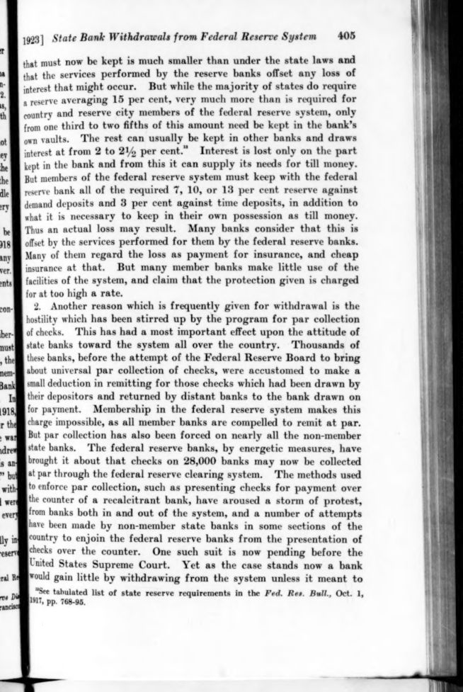

Tippetts, 1923: o que significam as saídas de bancos estaduais do Federal Reserve
Leitura: 9 min
Charles Sanford Tippetts conta e classifica as saídas de bancos estaduais do sistema de reserva federal desde 1919 e conclui que elas não indicam uma insatisfação geral com a gestão do sistema.


Em 30 de dezembro de 1922, H. Parker Willis escreveu no New York Evening Post que havia uma insatisfação crescente com o sistema de reserva federal dos Estados Unidos, visível na saída de membros e nas tentativas de derrubar a compensação de cheques ao par. Charles Sanford Tippetts, da Princeton University, abre o número de setembro de 1923 da American Economic Review com a pergunta que essas frases levantam: o que significam, de fato, as saídas de bancos estaduais do sistema?
“Há, sem dúvida, um sentimento crescente de insatisfação com o sistema de reserva federal.” (There is undoubtedly a growing feeling of dissatisfaction with the federal reserve system.)
Como se entrava e se saía do sistema?
Os bancos nacionais, lembra o autor, só podem deixar o sistema abrindo mão da carta federal; os bancos estaduais, autorizados pelas leis de cada estado, aderiam por escolha. A lei original não previa a saída de um banco estadual membro, e essa foi, segundo o autor, uma das razões pelas quais só 17 deles tinham aderido até 1º de maio de 1915. Em 7 de junho daquele ano, o Federal Reserve Board permitiu a retirada mediante aviso escrito de doze meses, limitada a 10% do capital de cada banco de reserva por ano, mas os bancos temiam que uma nova composição do Board revogasse a regra. O receio só acabou com as emendas de 21 de junho de 1917, que puseram a permissão na própria lei.
Até essas emendas, havia 53 bancos estaduais no sistema. No fim de 1917 eram 250, efeito da mudança legal, da busca de segurança na guerra e do apelo do presidente Wilson, em 13 de outubro de 1917, que fez da adesão um teste de patriotismo. O fim de 1918 registrou 930; em 31 de dezembro de 1919 eram 1.181; o ano seguinte acrescentou 300, e 1921 levou o total a 1.614. Em 31 de dezembro de 1922 eram 1.651, e em fevereiro de 1923, 1.643. Os bancos estaduais controlavam cerca de um terço do capital, do fundo excedente (surplus) e dos recursos do sistema.
Quantos saíram, e de onde?
Tippetts lembra que o número de membros também cai por outras vias: liquidações voluntárias, fechamentos por condição precária, fusões e conversões em bancos nacionais. Desde 1919, essas causas responderam por uma redução de 181 membros, de modo que um fluxo contínuo de adesões é necessário só para manter o número.
As saídas propriamente ditas começaram com o First Guaranty State Bank de Pittsburg, no Texas, em 18 de janeiro de 1917; a seguinte só ocorreu em meados de 1919. Foram onze naquele ano, onze em 1920, dezenove em 1921, treze em 1922 e três no começo de 1923. Dos que saíram, 35 tinham capital de US$ 50 mil ou menos e só três passavam de US$ 200 mil. O maior era o Midwest Reserve Trust Company, de Kansas City, no Missouri, com capital de US$ 2 milhões.
A distribuição geográfica concentra-se no Meio-Oeste e no Sul: o Nebraska perdeu 7 bancos e Illinois 6, enquanto os estados das costas do Atlântico e do Pacífico tiveram perdas muito pequenas, e 24 estados não registraram nenhuma saída. Os números mostram, para o autor, que as retiradas não são um fenômeno novo e que o ritmo diminuiu depois de 1921.
Por que os bancos saíram?
O motivo mais citado é a perda de juros sobre as reservas. A maioria dos estados exigia reserva média de 15%, bem mais que o sistema federal, mas só de um terço a dois quintos dela precisava ficar no caixa do banco; o restante podia ser depositado em outros bancos, rendendo juros. O membro do sistema, ao contrário, deve manter no banco de reserva toda a reserva exigida, de 7%, 10% ou 13% dos depósitos à vista e 3% dos depósitos a prazo, sem remuneração, além do dinheiro em caixa. O Exchange Bank of Kentucky, de Mount Sterling, avisou em 1918 que entrara só pelo período da guerra. Muitos bancos veem a perda como prêmio de um seguro barato; outros, que pouco usam o sistema, acham a proteção cara demais.
Pesam também outros fatores. A hostilidade à compensação de cheques ao par, que acabou com a pequena dedução que milhares de bancos faziam ao remeter o valor de cheques; os bancos de reserva conseguiram que cheques de 28 mil bancos fossem compensados ao par, e o método de apresentar cheques no balcão do banco recalcitrante provocou protestos e processos. Depois vêm o dinheiro fácil, que dispensou o redesconto; as leis estaduais de garantia de depósitos; e a saída de bancos em condição precária, como o Bank of Goltry, em Oklahoma, fechado depois de sair, num ano em que o Comptroller of the Currency registrou 330 falências de bancos estaduais.
As saídas revelam insatisfação com a gestão?
Para Tippetts, a saída pela perda de juros revela objeção a uma regra da lei, e a saída pela compensação ao par, objeção à lei e à gestão do sistema. Nenhuma delas, a seu ver, justifica mudar a lei: pagar juros sobre reservas não está de acordo com os princípios bancários sólidos, e as vantagens da compensação ao par são tão grandes que voltar às tarifas seria lamentável. O dado que relativiza o sinal é outro. No mesmo período em que 58 bancos estaduais saíram, 61 se converteram em bancos nacionais, que só podem deixar o sistema abrindo mão da carta federal: 10 em 1919, 10 em 1920, 13 em 1921, 22 em 1922 e 6 em 1923.
“Em vez de o número de saídas causar surpresa, parece mais apropriado surpreender-se com o fato de que mais bancos não tenham saído.” (Instead of the number of withdrawals causing surprise, it seems more properly a matter for surprise that more have not withdrawn.)
A razão, explica o autor, é que os não membros obtêm quase todas as vantagens da filiação por meio de correspondentes que são membros. A filiação não deve crescer muito, conclui, enquanto os não membros partilharem dos benefícios sem partilhar das responsabilidades.
Quem deveria estar no sistema?
Tippetts rejeita os dois extremos, o de restringir o sistema a poucos bancos escolhidos e o de trazer todos os elegíveis. Entre os cerca de 10 mil não membros elegíveis, diz, está o ponto mais fraco do sistema bancário. Bancos comerciais sólidos devem ser membros; bancos de investimento, em geral, não precisam ser. A dúvida está nos pequenos bancos rurais que lidam com agricultores e criadores. Se fazem negócio comercial ou têm papel agrícola de curto prazo, devem entrar; se operam quase só com papel de vencimento distante, a filiação não os ajuda nem melhora o sistema, que é de bancos comerciais e depende da liquidez dos ativos, como mostrou a experiência recente com o “crédito congelado”.
Por isso o autor discorda de Gray Silver, da American Farm Bureau Federation, e de Eugene Meyer Jr., da War Finance Corporation, que atribuíam à ausência dos bancos rurais a falta de crédito no campo: o que os agricultores queriam, responde, era prazo maior que os seis meses do papel redescontável. A lei de crédito rural de 4 de março de 1923 admitiu bancos estaduais com 60% do capital exigido dos nacionais. A primeira medida, prevê Tippetts, terá pouco efeito: dos 1.614 bancos estaduais membros em 31 de dezembro de 1921, só 285 tinham capital tão pequeno quanto US$ 25 mil, o mínimo de uma carta nacional.
A mesma lei estendeu de seis para nove meses o prazo do papel agrícola redescontável nos bancos de reserva. É o ponto que o autor rejeita com mais ênfase: o remédio para o crédito longo, escreve, são os bancos federais de crédito intermediário criados pela própria lei, não o banco de reserva.
“A adesão dos bancos rurais ao sistema de reserva federal não vale esse preço.” (The adherence of country banks to the federal reserve system is not worth the payment of that price.)
Uma nota final atualiza os números: até junho de 1923 houve mais 10 saídas, elevando o total a 68, e a Suprema Corte decidiu o caso da compensação ao par a favor do banco de reserva de Atlanta.
Na minha leitura
Na minha leitura, o artigo testa uma afirmação de imprensa com três comparações: o volume das saídas contra o tamanho do sistema, as saídas contra as conversões em bancos nacionais e as saídas contra as outras causas de redução do número de membros. O resultado depende menos da contagem do que da escolha do denominador.
O texto pertence ao debate dos anos 1920 sobre a filiação voluntária dos bancos estaduais ao sistema de reserva federal e sobre o lugar do crédito agrícola de prazo longo num banco central desenhado para papel comercial de curto prazo. A posição de Tippetts, de separar esse crédito em instituições próprias, coincide com o desenho da lei de 1923 que V. N. Valgren descreve no mesmo número.
Glossário
- Banco estadual membro
- banco com carta de um estado, e não federal, que aderiu voluntariamente ao sistema de reserva federal.
- Compensação ao par
- pagamento de cheques pelo valor de face, sem a tarifa que bancos cobravam ao remeter o valor.
- Redesconto
- empréstimo do banco de reserva a um banco membro, garantido por títulos que este já descontou.
- Banco correspondente
- banco que presta serviços a outro, como guardar parte de suas reservas e compensar cheques.
- Crédito congelado
- empréstimos que não podem ser recebidos no prazo e imobilizam os recursos do banco.
Fontes
- State Bank Withdrawals from the Federal Reserve System — Charles Sanford Tippetts (Princeton University) (pp. 401–410). Internet Archive (número completo, PDF)
- Edição completa, com os demais artigos: Nº 183 do Arquivo.
Documento em domínio público (EUA, publicado antes de 1931), via JSTOR Early Journal Content e Internet Archive. Resumo e comentário do autor deste site, sem afiliação com a American Economic Association. Encontrou um erro? Escreva: a correção é publicada no próprio texto, com data.
↑ Nº 183 · Saídas do Federal Reserve, automóveis, crédito agrícola e salários Filene, 1923: o salário mínimo como instrumento de eficiência →